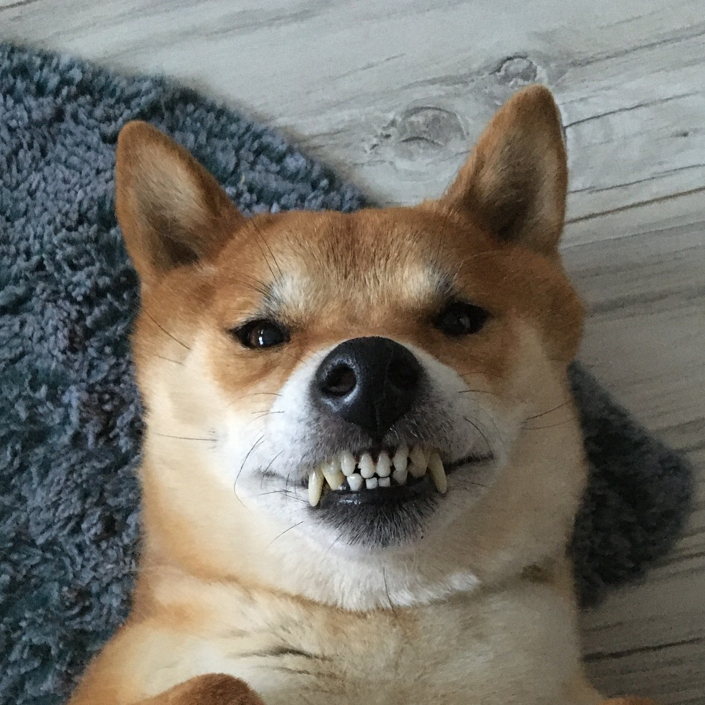
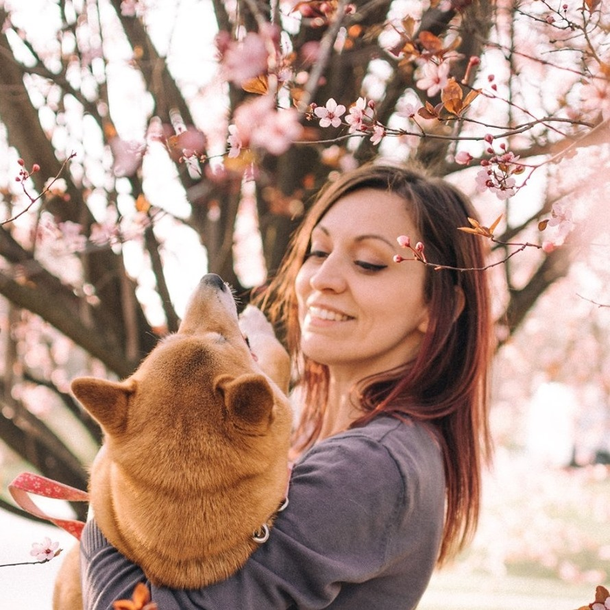

|  | A nevem Sora, kiejtve Szora, ami eget jelent. Japán eredetű akárcsak Shiba inu felmenőim. Azért kaptam ezt a nevet, mert amikor a gazdim kiválasztott, folyton ugráltam és lebunyóztam a nagytesómat. A gazdim nagyon régóta vágyott egy Shiba inu-re, és azt már akkor is tudta hogy makacs egy fajta vagyok, de azt még nem sejtette, hogy nevemhez híven repkedni és rugdalni fogok. De türelmes volt velem, megtanított sok dologra. Így mostanra néha szót fogadok, persze van hogy épp nem. Hiszen egy Shiba maga dönt arról, mikor fogad szót. :D |
| A nevem Kovács Viktória, sokan írói nevemen, Midoriként ismernek. Valóban nagy vágyam volt egy Shiba inu, és akkor még nem tudtam mibe vágom a fejszémet, de a sok-sok nehéz és vidám élmény után úgy döntöttem, képregény formájában megörökítem Sora történeteit. A Sora Puff Ide első kötete 2017-ben került nyomdába. Ezelőtt sok más képregényes munkában is részt vettem: Első képregényem 2010-ben jelent meg Ten Devin címen. Ez egy teljesen japán stílusban rajzolt és megjelenített képregény vagy ahogy a japánok hívják: manga. A Ten Devin nagyobbaknak készült, és összesen 3 kötete jelent meg. Későbbiekben a sok munkának és folyamatos kitartásnak köszönhetően teljes munkaidőben is képregényt rajzolhattam: Egy évig vettem részt a képregényes körökben azóta is megosztó Iron Comics sorozat készítésében. Megosztó vagy sem, Azalatt az 1 év alatt sok mindent megtanultam, és erre büszke vagyok. Nem csak a folyamatos, megjelenési határidőre tervezett rajzolás módszereit és a szakmában használt technikákat, hanem azt is hogy hogyan dolgozzunk összhangban csapatként a rajzolókkal és az írókkal. És hogy hogyan kezdődött ez az egész? Gyerekkoromtól kezdve érdekelt a művészet, az animációk/animék és a rajzolás. Így rengeteget másoltam, próbáltam rajzolni, amikor csak szabadidőm engedte. Később a Pannónia Filmstúdióban tanultam animációt. Ott elsajátítottam a rajzfilmrajzolás csínját-bínját. Sajnos akkor ezzel itthon nem igazán lehetett elhelyezkedni. Így a rajztudásomat fejlesztettem tovább: Szénnel-ceruzával portrékatt készítettem, majd később különleges filcekkel, ecsetekkel rajzfilmes karaktereket és saját ötleteimet is papírra vetettem. Közben rohamos fejlődést mutatott a digitális rajz. Így abba az irányba haladtam követve a trendeket. Ekkor karaktertervezést, háttértervezést is tanultam. Mikor megvásároltam a legelső wacom táblámat, elkészítettem első képregényemet a Ten Devit. A többit pedig már elolvashattátok az elején. :) |  |